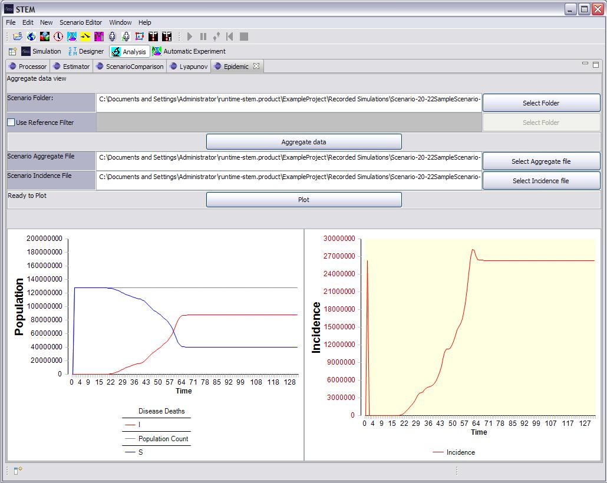

Epidemic View
The Epidemic View displays a dynamic collection of
"simulation controls" that match the set of "active" Simulations. Each
control shows the name of the Scenario and that status of the
Simulation, including its "state" (either "Running" or "Paused"), the
current "time" in the simulation, a progress bar. Each control also has
five buttons that control the corresponding Simulation:
- "Run" Begin running the Simulation.
- "Pause" Pause the running of the Simulation. This maintains
the current state of the simulation.
- "Reset" Reset all state information in the Simulation back to
initial values and set the state of the Simulation to "Paused"
- "Step" Run the simulation for a single cycle and then set the
state of the Simulation to "Paused"
- "Stop" Stop all execution of the Simulation and destroy all
state information. The Simulation will be removed from the system.
To use the Epidemic view:
- Enter the Analysis Perspective
- Click on the Epidemic Tab
- Use the Select Folder button to chose the folder containing the epidemic data
you wish to study. The files should have the following
format.
- Click Aggregate Data. This will automatically create two aggregated data
files based on the data in the original scenario folder. These file names
will appear in the
text fields for Scenario Aggregate File and Scenario Incidence file.
The aggregated data will be written to the 'aggregate' and 'incidence'
subfolders respectively
(these will be created if they do not exist). The files will be named based
on the input scenario folder. The aggregate data is the running integral or
sum over time
of all compartment data (S,E,I,R) over all locations in the input scenario
folder. The incidence data contains differential data including incidence
(new cases at time t),
new births, deaths, etc. Incidence data will be estimated if it does not
exist in the original scenario data files. Note, if you already have
aggregate data you can also input
these files manually.
- On the left hand side the Epidemic view will show the integrated state
data (S,E,I,R, etc). Differential data will appear on the right hand chart.
To toggle between linear
and logarithmic scales or to change what variables are plotted just right
click and use the custom dialog that will appear.
